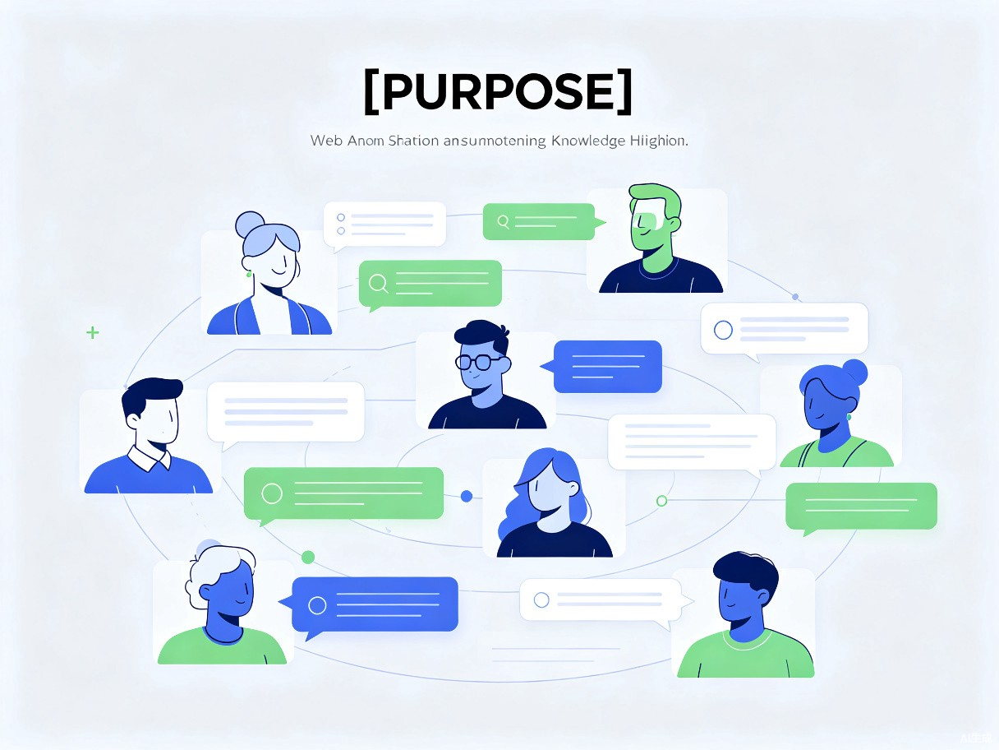

网页划词批注工具
让网页阅读像纸质书一样自由批注——划词高亮、即时笔记、数据自主掌控，打造属于你的知识沉淀闭环。
在信息爆炸的时代，我们每天都在网页上阅读大量内容，却缺少一个像样的"笔"来记录思考。
在网页上阅读学习资料时，无法像纸质书一样随手做笔记、划重点，阅读后的思考和总结容易丢失，知识难以沉淀。
日常在线学习时，经常需要对技术文章、教程中的关键内容做标注，但浏览器原生不支持，现有工具要么功能臃肿、要么数据不可控。
一款轻量级浏览器扩展（Chrome/Edge），支持在任意网页上划词高亮、添加 Markdown 批注，数据同步存储到用户自己的 Git 仓库。
我们相信，知识的积累不在于读了多少，而在于留下了多少属于自己的思考痕迹。Web Note 让每一次网页阅读都成为可追溯、可回顾、可分享的知识旅程。
深入理解用户需求，从真实场景出发设计产品
每天阅读技术博客、文档和教程，需要标记重点代码片段、记录理解心得，形成个人知识库。
频繁进行竞品调研、需求分析，需要在多个网页间做对比标注，与团队共享调研结论。
对接口文档、需求原型进行集中评审，成员间需要看到彼此的批注和评论，避免信息孤岛。
没有专业工具时，用户只能复制粘贴到笔记软件中，丢失原文上下文，笔记分散在各处难以检索。回读时无法快速定位到原文出处，学习效率大打折扣。
成员各自截图、各自记录，批注信息无法共享和沉淀。产品调研和文档评审的结论散落在聊天记录中，难以追溯，团队协作成本高。
从效率提升到商业拓展，Web Note 创造多维价值

轻量却不简单，每一个细节都为高效阅读而生
在任意网页上选中文字即可高亮，支持多种颜色标记不同类型的重点内容。
为高亮内容添加结构化笔记，支持 Markdown 语法，笔记清晰易读。
智能识别单页应用路由变化，页面切换后自动恢复所有高亮和批注。
批注数据自动同步到用户自己的 Git 仓库，数据完全自主可控，可追溯历史。
统一管理所有批注，支持按网站、标签、时间筛选，构建个人知识库。
多人共享批注，实时查看团队成员的标注和评论，协作更高效。
flowchart LR
A[用户网页] -->|划词高亮| B[Content Script]
B --> C[批注引擎]
C --> D[(本地存储)]
C --> E[Git 同步模块]
E --> F[(用户 Git 仓库)]
C --> G[SPA 路由监听]
G --> A
H[团队服务] -->|共享批注| C
从个人工具到企业级知识协作平台的演进路径
核心功能完全免费，快速积累种子用户。通过 GitHub 同步建立技术用户口碑，形成社区效应。
推出高级功能：无限批注历史、团队协作（小团队）、高级导出格式、云端备份等订阅服务。
私有化部署、SSO 集成、管理员控制台、企业知识库、API 接口对接，按团队规模收费。
开放插件市场、与主流笔记软件双向同步、AI 智能摘要与批注推荐，构建知识管理生态。
划词高亮、Markdown 批注、Git 同步、基础管理功能
无限历史、团队协作（5人）、高级导出、云端备份、优先支持
私有化部署、SSO、管理后台、API 接入、专属客户经理